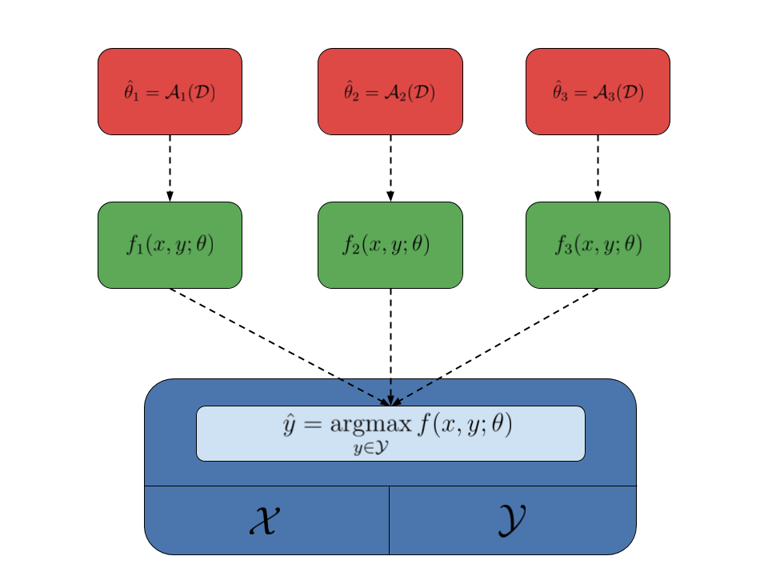

Structured prediction¶
Structured-output prediction is the branch of machine learning that deals with structured objects. Structured-output models are needed when the outcome that we want to predict is not just a label (classification) or a numerical value (regression), but rather a more complex object, most often comprised of several interdependent variables, such as a sequence, a tree or a graph. The classical applications include predicting spoken words in speech recognition, predicting a syntactic tree in text parsing, and predicting the segmentation of an image into e.g. background and foreground.
As typical in machine learning, we try to estimate a model that
given an input  (usually a vector of features) predicts an output
(also usually a vector). In standard classification and
regression, the assumption is that variables making up the output vectors
(usually a vector of features) predicts an output
(also usually a vector). In standard classification and
regression, the assumption is that variables making up the output vectors
 are independent from one another, and they are only directly dependent
on the input variable . In structure prediction, instead, the output
variables may dependent from other output variables, and thus we need to model
this dependency explicitly. In particular, this is often accomplished by
learning a scoring function , which ranks higher pairs
for which is a good prediction for input .
With a model of this type, making a prediction when given an input
consists in finding the object maximizing .
are independent from one another, and they are only directly dependent
on the input variable . In structure prediction, instead, the output
variables may dependent from other output variables, and thus we need to model
this dependency explicitly. In particular, this is often accomplished by
learning a scoring function , which ranks higher pairs
for which is a good prediction for input .
With a model of this type, making a prediction when given an input
consists in finding the object maximizing .
More formally, given a structured-output model ,
parametrized with some parameter vector  , ranking input-output
pairs , the prediction for
an input is found by solving the following optimization problem:
, ranking input-output
pairs , the prediction for
an input is found by solving the following optimization problem:

In Pyconstruct, the combination of the input space and output
space is called the domain of the structured prediction problem.
The domain also comes with an inference procedure that, given some input
and a model , is able to solve the above
optimization problem to find a prediction .
The model  also depends on some parameters , which are
usually estimated from data using some learning algorithm (or simply learner).
Given a dataset , a structured learning
algorithm finds the best estimate of the parameters for that
dataset . To do so, learning algorithms
usually rely on the inference oracles during training to make prediction on the
intermediate parameter estimates.
also depends on some parameters , which are
usually estimated from data using some learning algorithm (or simply learner).
Given a dataset , a structured learning
algorithm finds the best estimate of the parameters for that
dataset . To do so, learning algorithms
usually rely on the inference oracles during training to make prediction on the
intermediate parameter estimates.
An interesting aspect of the structured-output framework is that learners and domains are nicely decoupled: learners do not care about the structure of the objects, as long as there is an inference oracle making the predictions, and domains do not care about how the parameters of the model are estimated. This means that the same domain can be used to estimate different models using different learning algorithms. This fact is summarized by the following image, where the domain is represented by the blue box, different models are represented by the green boxes, while the red boxes represent different learning algorithms:
Pyconstruct follows this simple design schema:
- A
Domainhandles the input and output objects and exposes an inference function which accepts a model and returns an output object; - A
Modelobject holds some parameters and provides the actual scoring function to be optimized by the model; - A
Learnerestimates the parameters of a model from data; it takes a dataset and uses the domain as a black-box to get intermediate predictions and estimate progressively better parameters for the learned model.
The line between the domain and model is a bit blurry: sometimes it is more convenient to encode the actual function to optimize inside the domain and simply take the parameters to use from the model. Nonetheless, the domain can be conditionally interfaced with several models.
While Pyconstruct is built using this generic schema (for easy extensibility), our focus is on one particular type of structured models: large-margin linear models of the type . Here is a given joint input-output feature map and is some learned vector of weights. The reason is that this kind of models plays well with the type of generic solvers Pyconstruct uses for performing generic inference.
Pyconstruct’s goal is to make structured-output prediction possible on
non-standard objects by making the inference oracle programmable through
MiniZinc. Most MiniZinc solvers (at least those that can scale to problems of
reasonable size) are made for handling mixed integer linear programs (MILP).
A constraint problem is MILP when the function to optimize is linear in the
output variables and the output space is defined by linear constraints.
With a linear model , when the features
 are linear in and the output space
is defined by linear constraints, inference can be solved using an MILP solver.
The class of MILP problems is much larger than that handled by standard models
(e.g. conditional random fields). This gives unprecedented expessiveness to
structured-output prediction, which can now be used for a wide range of complex
scenarios.
are linear in and the output space
is defined by linear constraints, inference can be solved using an MILP solver.
The class of MILP problems is much larger than that handled by standard models
(e.g. conditional random fields). This gives unprecedented expessiveness to
structured-output prediction, which can now be used for a wide range of complex
scenarios.
Clearly, more expessiveness implies sometimes less efficiency for solving specific problems. Nonetheless, Pyconstruct is useful in a number of ways:
- Handling settings that cannot be reduced to standard models;
- Handling scenarios with scarce training data available;
- Handling scenarios with a lot of semantic knowledge available;
- Fast prototyping before implementing a more efficient yet laborious solution.